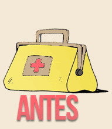
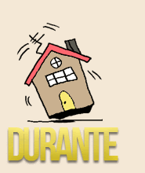
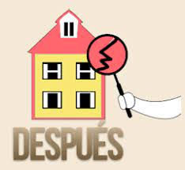

Medidas de Seguridad |
|
|
A continuación puedes revisar algunas recomendaciones en caso de sismo y antes de su ocurrencia: Antes de un sismo
1. Tener un plan de emergencia en caso de sismo con tu familia Este plan permite que cada miembro de tu familia conozca el rol que debe ocupar en caso de sismo. Para la elaboración de este plan debes seguir los siguientes pasos: •Detectar y reducir riesgos. Considera la revisión de tuberías, cables y demás objetos que obstruyan la evacuación o puedan caer fácilmente. •Diseñar rutas de evacuación. Tener un plan de evacuación con tu familia permite conocer a fondo el espacio donde habitas y sus alrededores, esto es importantísimo para prever posibles rutas de salida así como puntos de encuentro. •Tomar la mejor decisión. Mantener la calma durante el sismo y tener presentes las decisiones que se han tomado en familia previamente, te permitirá que en caso de sismo, todos sigan los protocolos establecidos y puedan mantenerse seguros. •Realizar simulacros. Los simulacros eventuales permiten que tú y tu familia actúen como si realmente ocurriera el sismo, verificando fallas en el actuar o permitiendo mejorar las decisiones tomadas. 2. Conocer los lugares más seguros de tu casa Identificar las zonas más seguras de casa permitirá saber cómo actuar en caso de sismo, conociendo los lugares en donde puedes permanecer y cuáles debes evitar. 3. Tener una mochila o bolso con tus cosas más importantes Recuerda que tomar medidas de seguridad en caso de sismo te permitirá estar preparado para lo que pueda ocurrir y ayudar a otros; no olvides llevar tus documentos de identificación, herramientas, pilas y agua. Como actuar durante un sismo
4. Mantén la calma Evita correr y sigue el plan de emergencia en caso de sismo que ya has construido junto a tu familia. 5. Evita a toda costa objetos que pueden caer y ventanas Si estás fuera, aléjate de postes, letreros publicitarios, árboles y edificios. 6. Evalúa si puedes permanecer donde estás El Servicio Geológico de Estados Unidos, USGS, recomienda quedarse adentro y ubicarse bajo una mesa o en un pasillo contra una pared interna. 7. Desactiva los servicios Dentro de las medidas de seguridad en caso de sismo, en lo posible corta la energía y cierra los pasos de agua y gas. Como actuar despues de un sismo
1. Si queda atrapado en los escombros: • No encienda fuego. • Trate de no moverse ni levantar polvo. • Cúbrase la boca con un pañuelo o con su ropa. • Dé golpes en un tubo o la pared para que los rescatadores puedan encontrarlo.Grite sólo como último recurso, ya que al hacerlo podría tragar cantidades peligrosas de polvo. 2. Sepa que después de un terremoto, vendrán réplicas. Si el lugar donde se encontraba fue afectado por el primer temblor, evite volver a él. 3. Verifique si hay lesiones. No intente mover a las personas que estén seriamente lesionadas, a menos que estén en peligro inmediato de muerte o nuevas lesiones. 4. Inspeccione su hogar para ver si hay daños estructurales. Si tiene dudas acerca de la seguridad, haga que un ingeniero civil inspeccione su casa antes de regresar. |
|